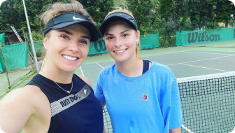
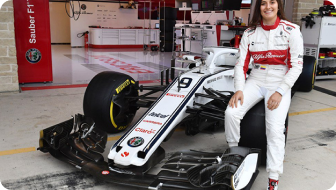
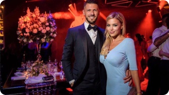

345 4 567 12 809 678 Костянтин Заруцький Костантин Заруцький — справжнє ім’я популярного автоблогера, який публікується в мережі під ніком AcademeG. Його відео про перетворення старих авто дивляться міліони підписників. Сам він називає свою роботу автокритикою. 08:30 - 24 ноября 2020 206 Росія заборонила співробітникам ФСБ мати дозвіл на проживання за кордоном  08:30 - 24 ноября 2020 206 Влад Фісун: Я не знаю як діджей-галузь вибереться з цього хаосу  08:30 - 24 ноября 2020 206 У Білорусі почали відраховувати студентів за протести: з університету - 5 осіб  08:30 - 24 ноября 2020 206 Влад Фісун: Я не знаю як діджей-галузь вибереться з цього хаосу 08:30 - 24 ноября 2020 206 Сергій Верланов: Я не розумію, за що мене звільнили Більше новин